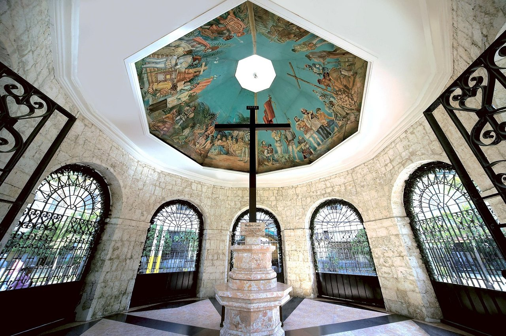

Discover the Wonders: Must-Visit Philippine Landmarks
Take a visual journey through the heart of the Philippines, discovering its most treasured gems. From sun-kissed beaches to architectural marvels, our country's beauty knows no bounds. Uncover the essence of our rich culture and captivating landscapes, with each location telling a unique story about our homeland."
As you scroll through the photo gallery, you'll notice the vibrant tapestry of colors that paint the skies during breathtaking sunsets. Feel the rhythm of city life contrasted with the peace of nature's retreats.
Magellans Cross,Cebu
Magellan's Cross is a famous historical and religious landmark in Cebu City, Philippines. It is a Christian cross planted by Portuguese and Spanish explorers led by Ferdinand Magellan when they arrived in Cebu in 1521. The cross represents the arrival of Christianity in the Philippines and is an important relic of the country's colonial history. The wooden cross near the Basilica Minore del Santo Niño, one of the Philippines' oldest churches, is believed to house the original cross.

Fort Santiago,Manila
Fort Santiago is well-known as a historical citadel in the heart of Intramuros, Manila. Originally built by Spanish conquistador Miguel López de Legazpi, the fort has served a variety of purposes throughout history, including protection fortress, prison, and military headquarters. One of its most notable features is the Baluarte de San Diego, a bastion with stunning views of the surrounding area. The fort is also known for its connection to national hero José Rizal.
San Agustin Church
San Agustin Church is renowned for being the oldest stone church in the Philippines and Southeast Asia. It was completed in 1607 and has stood the test of time, surviving numerous natural disasters and conflicts. The church is renowned for its Baroque architecture, which features ornate carvings, decorative details, and a beautiful trompe-l'oeil ceiling.Within its walls lie the tombs of several Spanish conquistadors, including Miguel López de Legazpi.